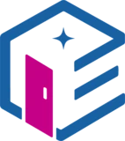

Die KI-Suite, die in Ihrer Kanzlei bleibt.
Eigenraum.ki bündelt Chat, Toolbox und Workflows in einer digitalen Arbeitsumgebung für Steuerberater, Wirtschaftsprüfer und Rechtsanwälte – vollständig lokal gehostet, DATEV-integriert und rechtssicher.
Kompromisslose Datensouveränität
Volle Flexibilität beim Deployment: lokal auf eigenen Servern oder in einem dedizierten, deutschen Rechenzentrum ohne US-Beteiligung – für absolute Immunität gegen den US CLOUD Act.
Von Kanzleien für Kanzleien
Kein theoretisches IT-Konstrukt: Alle KI-Use-Cases sind von praktizierenden Berufsträgern mitentwickelt, im Kanzleialltag validiert und flexibel auf Ihre Kanzlei zuschneidbar.
Sicheres Kanzlei-Wissen ohne Kontrollverlust
Über RAG und Vektordatenbanken wird Ihr Kanzleiwissen sicher als Basis integriert – Effizienz- und Qualitätsgewinn bei voller physischer Isolation Ihrer Daten, ohne Abfluss zu Trainingszwecken.
Nahtlose Workspace-Integration
Die KI agiert direkt in Microsoft Word und Excel – ganz ohne Tab-Wechsel, manuelles Kopieren oder ineffiziente Zwischenschritte.
Radikale Konnektivität
Proprietäre Schnittstellen und die smarte Anbindung von Drittanbieter-APIs (z. B. DATEVconnect Gateway) brechen Daten-Silos auf und machen Kanzleiwissen zentral nutzbar.
Mühelose Skalierbarkeit & Investitionssicherheit
Starten Sie fokussiert in der Steuerberatung und erweitern Sie das Ökosystem mühelos – ob Rechtsberatung, Wirtschaftsprüfung oder HR: Die KI wächst mit Ihrem gesamten Kanzleibetrieb.
Ausgangslage
Drei Berufsträgergruppen, ein Dilemma.
KI kann Recherche, Schreibarbeit und Dokumentenanalyse spürbar beschleunigen. Im Kanzleialltag von Steuerberatern, Rechtsanwälten und Wirtschaftsprüfern bleibt dieses Potenzial dennoch ungenutzt – denn Cloud-KI-Tools wie ChatGPT verarbeiten Daten außerhalb der eigenen Infrastruktur und stehen damit im Konflikt mit Mandatsgeheimnis, Berufsrecht und DSGVO.
Ihr Schmerz
Datenschutz und Berufsgeheimnis verhindern den produktiven KI-Einsatz im Kanzleialltag.
- Mandantendaten dürfen keine externen Server erreichen – das schließt ChatGPT & Co. faktisch aus
- DSGVO, Berufsgeheimnis und AI Act lassen wenig Spielraum für unkontrollierte KI-Experimente
- Generische KI-Tools kennen weder DATEV noch kanzleispezifische Arbeitsabläufe
- Steigende Mandatszahlen bei knappem Personal – Routineaufgaben verdrängen Beratungszeit
„Der verbreitete Reflex, KI-Projekte wegen DSGVO und AI Act aufzuschieben, führt in die Irre.“
Unsere Lösung
Eine KI, die sich an Ihren individuellen Anforderungen ausrichtet und mit Ihnen wächst
Von der spontanen Frage bis zum wiederkehrenden Mandatsprozess – die Eigenraum.ki-Suite begleitet Sie genau dort, wo Sie täglich arbeiten: im Chat, in der Toolbox, im Workflow und direkt in Word und Excel.

Eigenraum.ki-Suite für (DATEV-)Kanzleien
Eigenraum.ki-Buddy
KI-ChatStellen Sie Fragen wie einer erfahrenen Kolleg:in: Der Eigenraum.ki-Buddy versteht den Kanzleikontext und antwortet direkt, präzise und jederzeit verfügbar.
Eigenraum.ki-Toolbox
AlltagshelferFrei nutzbare Werkzeuge für spontane Fragen, Recherche und die alltägliche Schreibarbeit im Kanzleialltag – eine Art Multifunktions-Werkzeug.
Eigenraum.ki-Workflows
KI-AutomatisierungsplattformAutomatisierte Unterstützung für wiederkehrende Mandatsprozesse – von der ersten Prüfung bis zum fertigen Entwurf.
Eigenraum.ki-Office Add-Ins
Word & ExcelNative KI-Einbettung direkt in Ihre primäre Arbeitsumgebung – Medienbrüche werden konsequent vermieden.
Tool-Übersicht1
Recherche-Helfer
Stellen Sie steuerliche und kanzleiinterne Fragen und erhalten Sie fundierte Antworten mit belastbaren Fundstellen zum direkten Nachprüfen.
Briefvorlagen-Ersteller
Greifen Sie auf hinterlegte Kanzlei-Briefvorlagen zu und erstellen Sie Mandantenschreiben in Sekunden – mit korrekter Anrede und Formatierung.
Übersetzer DE/EN/FR
Übersetzen Sie Schriftstücke zwischen Deutsch, Englisch und Französisch – fachsprachlich korrekt, direkt im gewohnten Word-Dokument.
Diktiergerät
Diktieren Sie Texte, Notizen oder Tabelleninhalte per Spracheingabe – die KI überträgt sie automatisch in Word oder Excel.
Dokumentenscanner
Scannen Sie Dokumente ein und übergeben Sie sie automatisch der Wissensbasis – für präzisere Antworten bei Recherche und Assistent.
Eigene Tools anlegen
Legen Sie ein eigenes Werkzeug passend zu den Anforderungen Ihrer Kanzlei an.
Workflow-Übersicht (von statisch bis agentisch)1
Vertragsprüfung
Laden Sie einen Vertrag per Drag & Drop hoch: Die KI markiert Risikoklauseln und bewertet sie nach Schweregrad – für eine fundierte erste Einschätzung.
Berichtskritik
Lassen Sie Jahresabschlüsse und Berichte automatisch gegen Ihre kanzleieigenen Checklisten prüfen – für konsistente Qualitätssicherung vor der Freigabe.
Vertrags-Entwurf
Erstellen Sie neue Verträge direkt in Word – auf Basis Ihrer Vorlagen, mit passender Klauselauswahl für den jeweiligen Mandanten.
Belegprüfung & -aufbereitung
Scannen oder laden Sie Belege hoch und lassen Sie diese automatisch prüfen, kategorisieren und für die Buchhaltung aufbereiten.
Eigene Workflows anlegen
Definieren Sie einen individuellen Workflow passend zu den Abläufen Ihrer Kanzlei.
Datengrundlage der Suite – automatisch synchronisiert, jederzeit vollständig trennbar
1 Die Übersicht zeigt die von Praktikern – der Kanzlei GHJ – für Praktiker entwickelte Use-Case-Bibliothek zum Marktstart. Weitere Use Cases befinden sich bereits in Planung und werden in den nachfolgenden Release-Zyklen sukzessive veröffentlicht.
Funktionsweise an einem konkreten Beispiel
Use Case Berichtskritik: fünf Schritte vom Lagebericht zum geprüften Ergebnis
Formale Vollständigkeitsprüfungen wie die Berichtskritik binden heute wertvolle Prüfungszeit, ohne dass sie das fachliche Urteil ersetzen. Die Eigenraum.ki-Suite übernimmt den systematischen Abgleich gegen die einschlägigen Vorschriften – der Prüfer bleibt für die fachliche Würdigung und das Prüfungsurteil verantwortlich.
Lagebericht
der Muster
Unternehmen
Muster-Fabrik
GmbH 2025
Steht der Lagebericht in Einklang mit dem Jahresabschluss und den bei der Prüfung gewonnenen Erkenntnissen?
„Das Jahr 2024 war geprägt von Verbesserungen in der Produktion und der Arbeitsproduktivität."
Entspricht der Lagebericht neben gesetzlichen Vorschriften evtl. ergänzenden gesellschaftsvertraglichen Bestimmungen?
💬 Als Kommentar einfügenEigenraum.ki-Suite als Add-in in Microsoft Word (schematische Darstellung)
Nutzen für die Prüfungspraxis
- ✓Human-in-the-Loop-Ansatz: Das Prüfungsurteil trifft weiterhin der Berufsträger – die KI ersetzt den Prüfer nicht, sondern übernimmt den formalen Abgleich, damit er sich auf die fachlich kritischen Punkte konzentrieren kann.
- ✓Signifikante Effizienzsteigerung: Deutliche Reduktion der Zeit für formale Vollständigkeitsprüfungen bei gleichbleibender Prüfungsqualität.
- ✓Lückenlose Dokumentation: Jeder Prüfpunkt ist mit Normverweis und Fundstelle nachvollziehbar belegt – ideal für die Nachweisführung in der Prüfungsakte.
- ✓100 % deterministisch: Reproduzierbare, konsistente Ergebnisse statt variierender manueller Prüftiefe.
Rechtssicherheit
Datenschutz ist bei uns kein Zusatz, sondern das Fundament unserer „KI-Architektur".
§ 203 StGB und § 62a StBerG (bzw. § 50a WPO und § 43e BRAO) binden nicht nur den ersten Auftragsverarbeiter, sondern jede Station der Verarbeitungskette. Unsere Antwort darauf: eine lückenlos zertifizierte, rein deutsche Infrastruktur.
§ 203 StGB und § 62a StBerG
Die gesamte Verarbeitungskette unterliegt der strafbewehrten Verschwiegenheitspflicht und den Berufspflichten aller drei Berufsträgergruppen (§ 62a StBerG, § 50a WPO, § 43e BRAO).
DSGVO-by Design
Verarbeitung ausschließlich nach europäischem Datenschutzrecht.
Private AI-Infrastruktur (TÜV-zertifiziert)
Für maximale Datensicherheit und berufsrechtliche Konformität ohne Kompromisse setzen wir auf den TÜV-zertifizierten Rechenzentrumsverbund der Q-FOX® Gruppe mit eigenem Security Operations Center (SOC).
Kein Training
Die Modelle laufen als lokal gehostete LLMs auf unserer eigenen Server-Infrastruktur, lokal gehostet durch die Q-FOX® Gruppe, und senden keinerlei Daten an Hersteller oder ins Internet zurück. Ein Training mit Mandantendaten ist damit technisch ausgeschlossen.
Hinweis: Der US-amerikanische CLOUD Act betrifft uns nicht – wir arbeiten ausschließlich mit europäischen Anbietern ohne US-Mutterkonzern und ohne US-Geschäft.
Team & Netzwerk
Als komplementäres Power-Team die rechtssichere KI-Transformation im Kanzleiumfeld nachhaltig vorantreiben
Gemeinsam stärker – Ein strategisches Netzwerk aus vier führenden Spezialisten, das tiefes Domänenwissen mit kompromissloser Datensicherheit und technologischer Exzellenz verbindet. Für Sie bedeutet das: Maximale Effizienz im Kanzleialltag bei 100 % digitaler Souveränität.
Als eine der führenden mittelständigen Kanzleien aus Steuerberatern, Wirtschaftsprüfern und Rechtsanwälten Deutschlands im KI-Anwendungsbereich garantiert sie die absolute Praxisnähe der Lösung. Entwickelt „von Praktikern für Praktiker“ – exakt ausgerichtet auf die realen Prozesse und Qualitätsstandards Ihrer Kanzlei.
Website besuchen ↗Bringt langjährige Expertise in daten- und KI-gestützten Plattformen ein. Sie verantwortet das technologische Fundament sowie eine lückenlose KI-Governance.
Website besuchen ↗Sorgt mit Startup-Agilität für die schnelle Bereitstellung domänenspezifischer Automatisierungslösungen im Kanzleiumfeld. Das Ziel: Spürbare Entlastung Ihres Teams von Routineaufgaben und sofortige Effizienzgewinne.
(DSGVO-konform)
Gewährleistet als Private-AI-Infrastrukturgeber und TÜV-zertifizierter Rechenzentrumsverbund mit eigenem Security Operations Center (SOC) mit einer vollständig deutschen Gesellschafterstruktur das höchste Schutzniveau für Ihre sensiblen Mandantendaten. Maximale Datensicherheit und berufsrechtliche Konformität ohne Kompromisse.
Website besuchen ↗Das Eigenraum.ki Kernteam
Dr. Thomas Spanuth
CEOSteuert Strategie, Produkt und Unternehmensaufbau.
Amine Belakaria
Lead DeveloperVerantwortet technische Architektur und Entwicklung; steuert Umsetzung der spezifizierten KI-Use-Cases.
Erik Hartmann
Head of SalesTreibt Vermarktung, Kooperationen und Vertriebsaufbau.
Gianluca Weber
Head of Product Management & EnablementVerantwortet Produkt-Roadmap und Priorisierung; übersetzt Kanzlei-Anforderungen in Produktspezifikation; verantwortet Enablement der Kunden.
Wilhelm Schöning
CFOLenkt Finanzen und Controlling.
Daniel Pudelko
Technischer Berater – KI und DatenCTO bei savvytec. Verbindet angewandte Forschung mit Hardware- und Softwareentwicklung.
Philipp Jundt
Fachlicher Berater – Steuern & WirtschaftsprüfungGeschäftsführer bei Kanzlei GHJ. Bringt fachliche Praxiserfahrung aus Steuerberatung/WP ein; validiert Use Cases und Workflows auf Praxistauglichkeit.
Sarah-Ellen Rakover
Fachliche Beraterin – Rechtswesen & DatenschutzGeschäftsführer bei Kanzlei GHJ. Berät zu Datenschutz- und Berufsrecht (u. a. § 203 StGB, § 57 StBerG); begleitet regulatorische Freigaben.
Häufige Fragen
Antworten auf die wichtigsten Fragen zur Eigenraum.ki-Suite
Kurz und klar erklärt – von Datensouveränität über Berufsrecht bis Preismodell.
Die Eigenraum.ki-Suite ist eine digitale Arbeitsumgebung mit KI-Chat, Toolbox und Workflows, die speziell für Steuerberater, Wirtschaftsprüfer und Rechtsanwälte entwickelt wurde. Sie läuft vollständig lokal auf souveräner deutscher Infrastruktur und ist direkt in DATEV sowie Microsoft Word, Excel und Outlook integriert.
Deine Daten bleiben in Deutschland und laufen zu keinem Zeitpunkt über US-Server. Du entscheidest, ob die Suite lokal bei dir oder in einem dedizierten, DSGVO-konformen deutschen Rechenzentrum gehostet wird – ganz ohne Zugriffsmöglichkeit durch den US CLOUD Act.
Cloud-KI-Tools verarbeiten deine Mandantendaten außerhalb deiner eigenen Infrastruktur – das steht im Konflikt mit Mandatsgeheimnis, Berufsrecht und DSGVO. Eigenraum.ki läuft komplett in deinem Kontrollbereich, nutzt Open-Source-Sprachmodelle ohne externe API-Aufrufe und erfüllt damit die berufsrechtlichen Vorgaben (u. a. § 203 StGB, § 57 StBerG, § 63a StBerG).
Ja. Genau das war der Ausgangspunkt der Entwicklung: Durch die vollständig lokale Verarbeitung entsteht keine Weitergabe von Mandanteninformationen an Dritte, wie es bei Cloud-Diensten der Fall wäre.
Die Eigenraum.ki-Suite ist nativ an DATEV angebunden, sodass du direkt mit deinen bestehenden Mandats- und Dokumentendaten arbeiten kannst, ohne Medienbrüche oder manuellen Export.
Drei Bausteine: der KI-Chat für spontane Fragen, die Toolbox mit fünf Werkzeugen (u. a. Recherche-Helfer, Übersetzer, Dokumentenscanner) und die Workflows für wiederkehrende Prozesse wie Berichtskritik, Vertragsprüfung oder Belegprüfung – alle direkt nutzbar in Word, Excel und Outlook.
Für Steuerberater, Wirtschaftsprüfer und Rechtsanwälte gleichermaßen – jede Berufsgruppe hat eigene, passgenaue Workflows und Ansichten, während die zugrunde liegende KI-Basis dieselbe rechtssichere Infrastruktur nutzt.
Da die Modelle lokal gehostet werden, fallen keine separaten Token-Kosten pro Anfrage an – die Nutzung ist über eine transparente Hosting-Pauschale abgedeckt. Das genaue Preismodell richtet sich nach Kanzleigröße und Deployment-Variante und wird im persönlichen Erstgespräch besprochen.
Die Suite lässt sich flexibel deployen – lokal auf euren eigenen Servern oder in einem dedizierten Rechenzentrum. Ein Erstgespräch klärt Infrastruktur, DATEV-Anbindung und den passenden Rollout-Zeitplan für dein Team.
Über den Button „Demo anfragen" oben auf der Seite – wir melden uns zeitnah für einen persönlichen Termin.